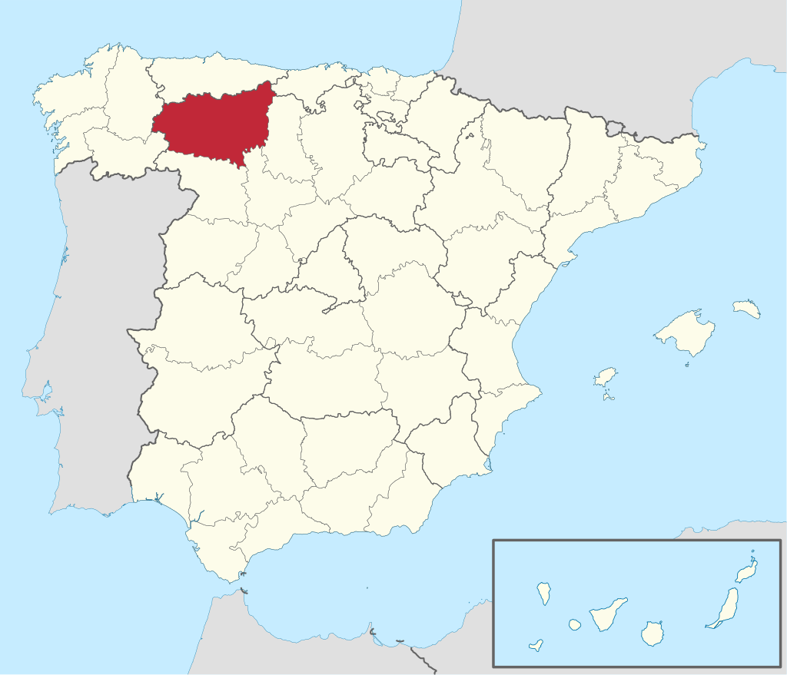
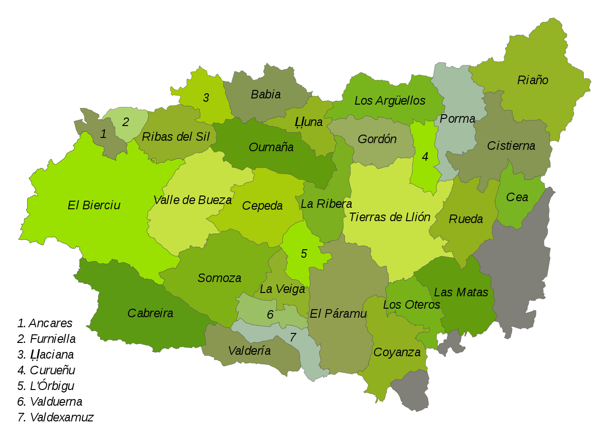
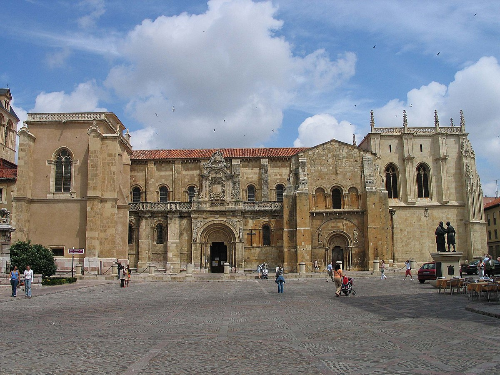
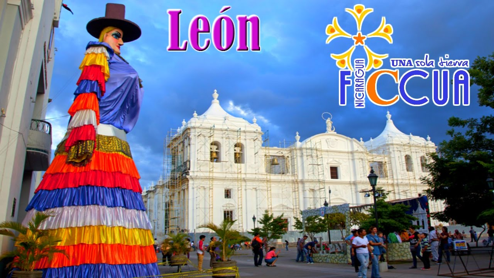
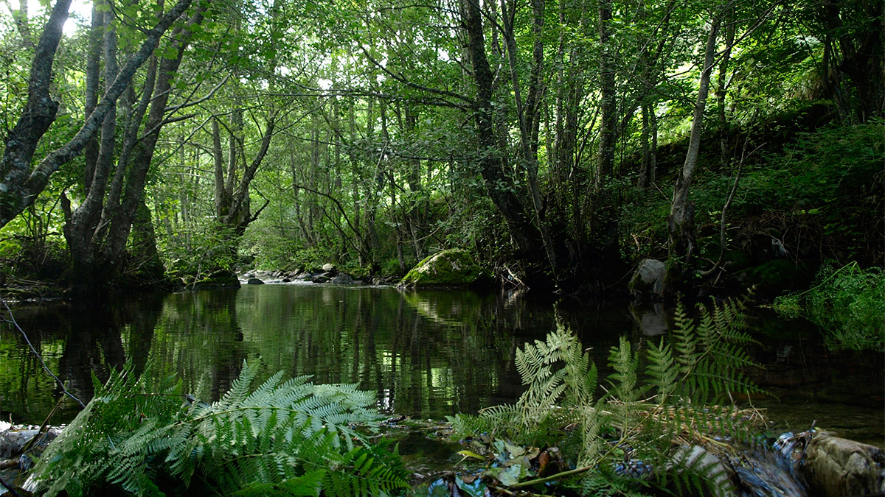
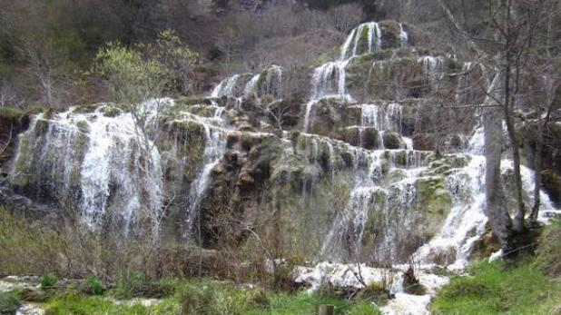

Informacion
Localización
Localidades principales
Geografía de la provincia
Historia
Cultura
Naturaleza
Tradiciones
Otros aspectos de interés
León
_______________________________________________________________________________________________________________________________________________________________
Localización
León (Llión, en leonés; León en gallego) es una provincia española situada en el noroeste de la comunidad autónoma de Castilla y León. Su capital es León.
Limita al norte con el Principado de Asturias y Cantabria, al este con la provincia de Palencia, al sur con las provincias de Zamora y Valladolid y al oeste
con Galicia, concretamente con las provincias de Orense y Lugo. Tiene una extensión de 15 581 km² y en 2018 contaba con 463 746 habitantes.

_______________________________________________________________________________________________________________________________________________________________
Localidades principales
Localización Province León : País España, Comunidad Autónoma Castilla y León.
Grandes ciudades : León, Ponferrada, San Andrés del Rabanedo, Villaquilambre, Astorga, La Bañeza, Bembibre, Villablino, Valverde de la Virgen, Valencia
de Don Juan, Cacabelos, Sariegos, Fabero, Camponaraya, La Robla, Carracedelo, La Pola de Gordón, Cistierna, Toreno, Santa María del Páramo, Villarejo de
Órbigo, Villafranca del Bierzo, Chozas de Abajo, Sahagún, Benavides, Carrizo de la Ribera, Valdefresno, Torre del Bierzo, Santovenia de la Valdoncina, Vega
de Espinareda, Cuadros, Santa Marina del Rey, Villaturiel, Villadecanes, San Justo de la Vega, Onzonilla, Boñar, Cubillos del Sil, Mansilla de las Mulas y
Castropodame.

_______________________________________________________________________________________________________________________________________________________________
Geografía de la provincia
Ubicacion
La ciudad de León está ubicada en una terraza fluvial en la confluencia de los ríos Bernesga y Torío, a una altitud de 840 m s. n. m.. Situada aproximadamente en el centro de la provincia, se encuentra en un lugar estratégico del noroeste peninsular, ya que es paso obligado para ir a Galicia y a Asturias.Su término municipal limita al norte con Sariegos y con Villaquilambre, al este con Valdefresno, al sur con Santovenia de la Valdoncina, Onzonilla y Villaturiel, y al oeste con San Andrés del Rabanedo y Valverde de la Virgen. El territorio del término municipal está representado en la hoja 161 del Mapa Topográfico Nacional.
Orografia
Situado en la transición del Páramo Leonés a la cordillera Cantábrica, su ubicación en la confluencia de dos ríos hace que la capital leonesa se asiente en una zona predominantemente llana, si bien según se aleja del núcleo urbano el terreno se eleva, encontrándose por el norte con el Monte de San Isidro y por el este con los altos en los que se encuentra Golpejar de la Sobarriba en el término municipal se encuentran los vértices geodésicos de Valenciano, a una altitud de 938 m s. n. m., y de San Isidro, a una altitud de 939 metros en centro de la ciudad se encuentra a una altitud de 837 metros, mientras que la altitud del municipio varía desde los 800 metros en el último tramo en la localidad del río Bernesga hasta los 944 metros en el norte del municipio.Hidrografia
León está bañada por los ríos Bernesga, que recorre la ciudad por el oeste, y el Torío, que la delimita por el este, situándose la mayor parte del núcleo urbano entre los dos cauces. A su paso por la ciudad, se encuentran canalizados y adecuados para el paseante, con jardines y paseos peatonales. La confluencia de ambos se sitúa a la altura del polígono de La Lastra, donde el Torío vierte sus aguas en el Bernesga.Sobre el río, y en el centro de la ciudad, se encuentra el Aula de Interpretación de las Energías Renovables de León, perteneciente al Ayuntamiento de León. Es un aula destinada a enseñar a sus visitantes las soluciones complementarias y alternativas que proporcionan las energías renovables al sistema energético actual,24 pretendiendo ser un referente en ese aspecto en la comunidad autónoma de Castilla y León.
Se trata de un edificio situado en los márgenes del río Bernesga junto al Puente de los Leones, construido tras un acuerdo alcanzado por el EREN y el Ayuntamiento de León. El Aula posee un espacio de exposiciones sobre el medio ambiente y cuenta con una instalación solar térmica, una instalación solar fotovoltaica y una minicentral hidroeléctrica.24 La electricidad generada por estas tres últimas se incorpora a la red eléctrica general para su posterior utilización, siendo capaz de dar luz a 1100 familias.
Ver video desde youtube - Video realizado por ChiriEspiali
_______________________________________________________________________________________________________________________________________________________________
Historia
Fundación y época romana
La ciudad de León surge hacia 29 a. C. como campamento militar romano de la Legio VI Victrix, en la terraza fluvial entre los ríos Bernesga y Torío, cerca de la ciudad astur de Lancia, con motivo de las llamadas guerras cántabras.31 A finales del siglo i, a partir de 74, el campamento es ocupado por la Legio VII Gemina, fundada por Galba, la cual permanecerá en León hasta aproximadamente principios del siglo v. Fue la única legión asentada en Hispania hasta la caída del Imperio Romano de Occidente (476), por lo que durante todo este tiempo León fue la capital militar de la Península. La ciudad perteneció al Convento Asturicense, con capital en Asturica Augusta, el cual formó parte de la provincia Tarraconense hasta el siglo iii, cuando, con la creación de la provincia de Gallaecia, fue integrado en ésta.El trazado campamental romano original aún puede observarse en la actualidad, puesto que se conservan gran parte de las murallas que lo rodeaban en los siglos iii y iv. Alrededor de las murallas que delimitaban el campamento fue creándose un núcleo civil paralelo, la cannaba, en la que se asentaban todas las personas que se encargaban de cubrir las necesidades de los soldados. Por los restos arqueológicos se sabe que contaba con unas termas32 (con ruinas aún visibles bajo la catedral) e incluso un anfiteatro con capacidad para 5000 espectadores a extramuros, actualmente enterrado bajo la calle Cascalerías.
Épocas sueva, visigoda y musulmana
Tras el período romano, la ciudad formó parte del Reino suevo y posteriormente, tras su conquista, del Reino visigodo. Entre los siglos vi y viii la escasez de evidencias arqueológicas proyectan una imagen carente de vitalidad urbana, con una clara reducción del espacio habitado, aunque el descubrimiento de cerámicas pertenecientes al periodo omeya cordobés cerca de Puerta Obispo nos indica que la ciudad no fue abandonada completamente, sino que conservó cierta población estable. La ciudad fue conquistada, durante la invasión musulmana de la península, en el año 712, siendo recuperada en el 754 por Alfonso I aunque debido a su condición fronteriza se mantendría deshabitada durante casi un siglo.Tendremos que esperar hasta el año 846 cuando un grupo de mozárabes intentó repoblar la ciudad, que pese haber permanecido despoblada al estar en el centro de la línea de combate entre cristianos y musulmanes aún conservaba sus murallas romanas. El intento fue frustrado por un ataque omeya que mantendría la ciudad despoblada hasta el año 853 en el que Ordoño I incorpora de forma efectiva la ciudad al Reino de Asturias, repoblándola con éxito.33 Sería finalmente con Ordoño II, que ocupó el trono (914 - 924) tras la muerte de su hermano García I, cuando la ciudad se convierte en capital del reino astur, iniciando el Reino de León.
Repoblación y capitalidad
La ciudad de León fue sede regia desde la fundación del reino, con García I, a principios del siglo x, hasta la integración en la Corona de Castilla en 1230, momento en que la capitalidad del reino unificado fue itinerante y debido a ello León fue creciendo y evolucionando en su desarrollo. En esta cuestión jugó un destacado papel el Camino de Santiago, quizás la más importante vía de circulación de gentes, ideas, cultura y arte del Medievo. En el siglo x destacarían reyes como Ordoño II, que fijó la capitalidad y consagró la primera catedral en las antiguas termas romanas, donde hoy se encuentra la catedral gótica, y su hijo Ramiro II, que construyó el primer palacio en Palat de Rey y, al igual que su padre, llevó a cabo exitosas campañas contra los musulmanes. La segunda mitad del siglo es de luchas civiles en León, reyes débiles con problemas con la nobleza, y de ataques y contraataques musulmanes a la ciudad, incluyendo uno de Almanzor, que causó graves daños. La recuperación y reordenamiento de la capital llegó con Alfonso V a inicios del siglo xi, así como el comienzo de la victoria cristiana en la península. Avanzado el siglo, hay un cambio de dinastía, destacando a Fernando I como rey iniciador de la basílica de San Isidoro, construida con motivo del traslado de los restos de San Isidoro a la ciudad y del panteón real del reino. Su sucesor Alfonso VI que pasó a los anales de historia por el avance en la reconquista con la conquista de Toledo y, sobre todo, por su relación política con el Cid, fue cuyo reinado presenció la consagración de la nueva catedral románica iniciada por Urraca en 1073, donde presumiblemente trabajarían los mismos canteros que en la basílica.En el siglo xii, y tras el paso de la primera reina, Urraca I, destaca su hijo Alfonso VII, que avanzó notablemente la reconquista y llegó a coronarse emperador de toda Hispania en la antigua catedral leonesa. Es en este siglo cuando el geógrafo y viajero árabe Edrisi escribió lo siguiente sobre León: «Allí se practica un comercio muy provechoso. Sus habitantes son ahorradores y prudentes». Tenemos también noticia de León a través de diversos códices, entre ellos el Codex Calixtinus, manuscrito que, entre otras cosas, contiene información sobre la ruta que los peregrinos seguían hacia Santiago de Compostela. Con todo ello, la ciudad conoció el desarrollo de nuevos barrios, en ocasiones extramuros de una ciudad que ya se quedaba pequeña, y casi siempre a la vera del camino de los peregrinos, que accedían a la ciudad por la llamada Puerta Moneda.
Tras la muerte de Alfonso VII, este dividió los reinos de León y Castilla entre sus hijos; Fernando II reinó en León, destacando la reconquista de Extremadura. Su sucesor y último rey privativo de León fue Alfonso IX, que convocó las primeras cortes de Europa, con participación de todos los estamentos sociales, en la basílica de San Isidoro en 1188. Será en 1230, cuando tras su muerte la corona leonesa y la castellana recaen sobre la cabeza del monarca Fernando III el Santo, algo que supondría para León la pérdida de la capitalidad fija, pues esta se vuelve itinerante.34 No supondría no obstante el fin de la prosperidad de la ciudad, que durante todo el siglo xiii mantuvo un gran empuje comercial y crecimiento demográfico. Es en esta época cuando a mediados de siglo, Alfonso X el Sabio ordenó el derribo de la vieja catedral y la construcción de la actual, de estilo gótico.

_______________________________________________________________________________________________________________________________________________________________
Cultura
El Ayuntamiento de León ha impulsado el conocimiento y uso de la lengua leonesa en la ciudad de León, tanto en enseñanza para adultos como con la creación
de la asignatura Llingua y Cultura Llïonesa que se ofrece de manera optativa y extraescolar en los centros escolares.
En el curso 2008-2009 comenzó a impartirse la asignatura en 16 centros públicos y concertados de la ciudad de León, para niños de quinto y sexto curso de
Educación primaria, con ochenta niños matriculados. El ayuntamiento, en colaboración con la Universidad de León, también ofrece cursos para adultos, habiéndose
superado los cien matriculados.139Los cursos de adultos se estructuran en seis niveles, llegándose en 2009 al quinto nivel.
El Ayuntamiento de León también realiza campañas de promoción del leonés y en leonés, ofreciendo algunas de sus concejalías información en leonés y castellano
en los formularios públicos, y publicando las noticias en su página web en ambos idiomas

_______________________________________________________________________________________________________________________________________________________________
Naturaleza
La ciudad de León es una ciudad reconocida por su gran cantidad de zonas verdes, tanto es así que León es la ciudad española que más zonas verdes pone al
servicio de sus ciudadanos.138 León cuenta con 2 196 542 m² de zonas verdes distribuidos por toda la ciudad. Este espacio se encuentra dividido entre numerosos
parques, entre los que destacan por tamaño; el Parque del Chantre, Parque de Quevedo, el Jardín del Cid, el Jardín de San Francisco y el Parque de La Granja.


_______________________________________________________________________________________________________________________________________________________________
Tradiciones
Las tradiciones leonesas se anclan en el remoto pasado de un pueblo que luchaba por hacerse un hueco en la historia. Hoy día estas tradiciones son recogidas por
los leoneses, que con celo y mucho mimo las mantienen vivas, recordando que son lo que fueron y serán lo que son, un pueblo con entidad propia, habitantes del
Reino de León. Se recoge esta tradición en el año 1158, año en el que una tremenda sequía asoló el Reino, y se le pidió ayuda a San Isidoro, que obró con milagro, y la lluvia
regó los campos de León y alfoz.
En agradecimiento a San Isidoro, el pueblo, representado por el Ayuntamiento, acude todos los años a la Basílica de San Isidoro para ofrecer como ofrenda un
cirio de una arroba y dos hachas de cera. En el claustro está esperando el cabildo que acepta la ofrenda, pero exige el carácter obligatorio, o de foro, del
mismo. Entonces se entabla una batalla dialéctica y alarde de cualidades oratorias entre Ayuntamiento, que defiende la voluntariedad de la ofrenda u oferta, y
el cabildo que exige su obligatoriedad. Al final todo queda en tablas. Tres reverencias de exagerada inclinación, Las Cabezadas, por parte de los representantes
del Ayuntamiento, despiden la ceremonia hasta el año siguiente.
Las Cantaderas conmemoran la victoria de Ramiro I en la Batalla de Clavijo, poniendo fin al ignominioso tributo de las cien doncellas que los reyes cristianos
debían de pagar al mundo musulmán.
Esta celebración, de tradición medieval, es en la edad moderna donde adquiere auge. Antiguamente se celebraba los días 14 y 15 de agosto. En la actualidad ha
sido trasladada al domingo anterior a la celebración de San Froilán, el 5 de octubre. En un recorrido que discurre entre la Plaza del Ayuntamiento y la Catedral,
jóvenes ataviadas con la vestimenta de la época danzan al ritmo marcado por la sotadera, o mujer mora, que debía introducirlas en las costumbres musulmanas.
Posteriormente la Comitiva Municipal hará una ofrenda a la virgen y se entablará una discusión entre el Cabildo catedralicio y la Corporación sobre la
obligatoriedad o no de la ofrenda que hace el ayuntamiento. Una ceremonia similar a la que se hace en Las Cabezadas, pero con el Cabildo catedralicio como
protagonista.
El filandón o calecho, como se denomina en la zona de Babia, es una reunión en una casa determinada de las gentes del pueblo con afán lúdico. En estas reuniones
se contaban cuentos e historias diversas o se cantaban canciones acompañadas de los instrumentos de la zona. El nombre de Filandón proviene de filar o hilar,
debido a que las mujeres aprovechaban estas reuniones sociales para hilar.
La lucha leonesa es otra de las tradiciones arraigadas de León. Se le atribuye un origen prerromano, aunque es desde la edad media cuando se tiene constancia
de su existencia. Localizada en el mundo rural, la lucha leonesa está vinculada a ganaderos, pastores, molineros, canteros, leñadores, etc. Parece ser que la
lucha leonesa es el origen, a través de la trashumancia, de otros tipos de lucha dentro del Reino de León, cuyos ejemplos los encontramos en las luchas o
trinchas y las vueltas o marañas de la provincia de Zamora, la Lucha de la Cruz de Salamanca o la galholfa del norte de Portugal.
En el Reino de León la trashumancia fue uno de los factores económicos más significativos. Comienzan a organizarse los pastores a partir de los siglos XI-XII,
pero es en el siglo XIII cuando adquiere su verdadera relevancia. Entre los años 1.260 y 1.265 se forma el Real Concejo de la Mesta, llevando el ganado vacuno
y ovino desde las montañas leonesas y zamoranas a los pastos extremeños conquistados al Islam. Hoy día, aunque ha perdido la importancia que tuvo antaño, se
siguen trasladando los rebaños. La tradición pastoril, un auténtico modo de vida, se ve reflejado en muchas localidades a través de costumbres y gastronomía.
_______________________________________________________________________________________________________________________________________________________________
Otros aspectos de interés
El escudo de León está compuesto por un campo de plata en el que figura un león rampante de púrpura, linguado, uñado, armado de gules y coronado de oro. Aparece
timbrado con una corona abierta de oro (la forma de la antigua corona real, usada hasta el siglo xvi). En el escudo de la ciudad de León aparece representada
una corona marquesal en vez de la antigua real y el león no figura coronado.
Al producirse la integración en 1230 de la Corona leonesa en Castilla con Fernando III el Santo se dispuso que en el escudo del rey los elementos heráldicos
castellanos (un castillo almenado de oro sobre un campo de gules) y leoneses formaran un escudo cuarteado. Es de destacar que en los cuartelados no había sitio
para dos leones, hasta aquel momento pasantes, por lo que se les situó como rampantes para ocupar por completo los cuarteles que les correspondían. Esta es la
disposición que ha llegado a la actualidad. El uso de la corona sobre la cabeza del león no apareció documentado hasta el reinado de Sancho IV de Castilla y León
(1284-1295).
Actualmente el escudo de León es el símbolo de la provincia y, acompañado por adornos exteriores, de la ciudad de León.
| Lunes | +10° | +1° | |
| Martes | +13° | +2° | |
| Miércoles | +16° | +5° | |
| Jueves | +13° | +4° | |
| Viernes | +9° | +3° | |
| Sábado | +10° | -1° |
_______________________________________________________________________________________________________________________________________________________________
Mapa Castilla y Leon

Correo: david.alomon@educa.cyl.es